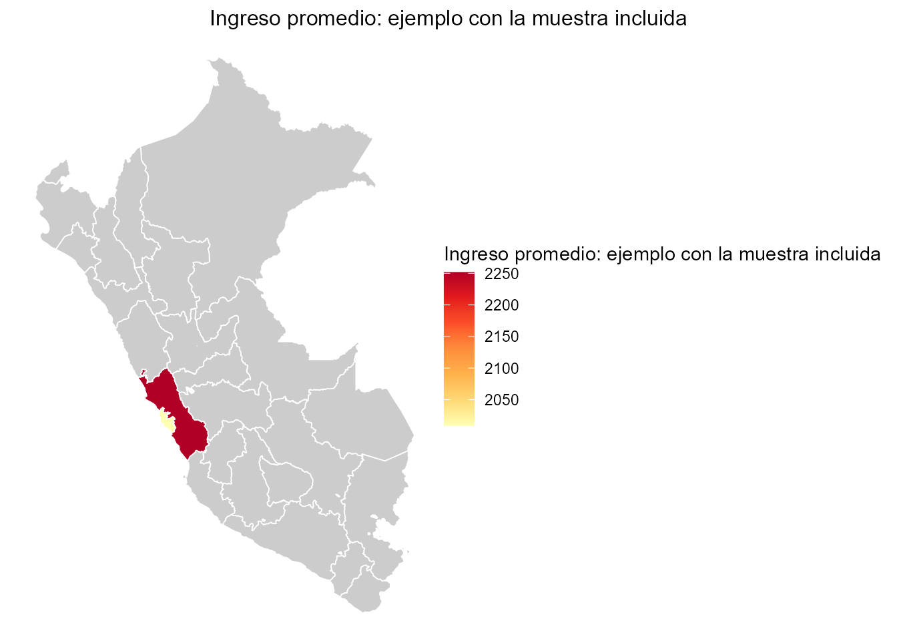

Indicadores ponderados y mapas
Código:vignettes/manual-indicadores-mapas.Rmd
manual-indicadores-mapas.RmdEsta parte del manual muestra cómo obtener estimaciones ponderadas, consultar resultados nacionales ya calculados y representar indicadores en los ámbitos departamentales que publica la EPEN.
indicadores(): calcular ingresos y horas
ponderados
Para qué sirve
indicadores() calcula el ingreso laboral promedio o
mediano y las horas semanales promedio de la población ocupada. El
ingreso incluye las ocupaciones principal y secundaria y los ingresos
extraordinarios; las horas corresponden al total trabajado en todas las
ocupaciones. Puede obtener un resultado nacional o separar la estimación
por sexo, región u otras variables de la base.
Qué recibe
| Argumento | Uso |
|---|---|
data |
Base con la variable del indicador y un factor de expansión. |
indicador |
ingreso_promedio, ingreso_mediano u
horas_promedio. |
por |
Una o varias variables para formar grupos. |
var_strata |
Nombre del estrato si no se detecta automáticamente. |
var_psu |
Nombre de la unidad primaria de muestreo. |
var_peso |
Nombre del factor de expansión. |
var_estado |
Variable que identifica la condición de actividad. |
codigo_ocupado |
Código de ocupado; en la EPEN es 1. |
var_indicador |
Variable alternativa, solo para medir otro concepto. |
incluir_inferencia |
Agrega el error estándar experimental; por defecto es
FALSE. |
Qué hace por dentro
- Conserva a las personas ocupadas cuando la base trae su condición de actividad.
- Detecta el peso disponible. Si hay varios, pide elegir el que corresponde al periodo.
- Convierte de forma controlada los pesos y valores que llegan como texto.
- Excluye del cálculo los pesos ausentes o inválidos y registra sus conteos.
- Para ingreso, conserva remuneraciones positivas; para horas, admite ceros.
- Calcula el indicador para el total o para cada grupo.
- Si solicitas inferencia, identifica las unidades primarias de muestreo (UPM) combinando muestra, región y conglomerado, y utiliza el estrato cuando corresponde.
- En ese caso, calcula el error estándar con
surveyy marca la inferencia como experimental.
Qué devuelve
El resultado contiene el nombre del indicador y
estimado. También informa el universo, los casos usados,
los faltantes o valores inválidos y la población representada por las
observaciones que entraron al cálculo. Si usas por,
conserva además las columnas que identifican cada grupo.
error_std aparece solo cuando usas
incluir_inferencia = TRUE.
ingreso_sexo <- indicadores(
muestra_epen_2024,
indicador = "ingreso_promedio",
por = "sex"
)
#> Warning: 80 filas no participan por peso ausente o invalido.
#> Warning: 48 filas con peso valido no participan por el valor del
#> indicador.
ingreso_sexo
#> sex indicador estimado n_universo n_estimacion n_sin_peso
#> 1 Hombre ingreso_promedio 1847.812 1000 933 40
#> 2 Mujer ingreso_promedio 1954.854 1000 939 40
#> n_peso_invalido n_sin_indicador n_indicador_invalido n_fuera_definicion
#> 1 0 0 0 28
#> 2 0 0 0 23
#> poblacion_representada
#> 1 48658.90
#> 2 49425.97También puedes calcular más de una agrupación:
indicadores(
muestra_epen_2024,
indicador = "horas_promedio",
por = c("sex", "is_rural")
)
#> Warning: 80 filas no participan por peso ausente o invalido.
#> sex is_rural indicador estimado n_universo n_estimacion n_sin_peso
#> 1 Hombre 0 horas_promedio 43.98902 668 640 28
#> 2 Mujer 0 horas_promedio 43.60049 668 641 27
#> 3 Hombre 1 horas_promedio 44.58943 332 320 12
#> 4 Mujer 1 horas_promedio 44.79871 332 319 13
#> n_peso_invalido n_sin_indicador n_indicador_invalido n_fuera_definicion
#> 1 0 0 0 0
#> 2 0 0 0 0
#> 3 0 0 0 0
#> 4 0 0 0 0
#> poblacion_representada
#> 1 34136.78
#> 2 34200.17
#> 3 15654.51
#> 4 16505.07Cómo interpretar el resultado
estimado incorpora el factor de expansión, por lo que no
equivale al promedio simple de las filas. La mediana usa el extremo
inferior del intervalo donde la distribución ponderada alcanza 0,5, la
regla matemática de survey.
Si necesitas evaluar la precisión de una estimación, puedes solicitar su error estándar. Este cálculo sigue siendo experimental: se contrastó con resultados publicados por el INEI, pero todavía no contamos con una descripción completa de su procedimiento de estimación.
Para solicitarlo, usa incluir_inferencia = TRUE:
indicadores(
muestra_epen_2024,
indicador = "ingreso_promedio",
por = "sex",
incluir_inferencia = TRUE
)
#> Warning: 80 filas no participan por peso ausente o invalido.
#> Warning: 48 filas con peso valido no participan por el valor del
#> indicador.
#> i Inferencia experimental: estrato strata_code y UPM .upm; ver `?indicadores`.
#> This message is displayed once per session.
#> sex indicador estimado error_std n_universo n_estimacion n_sin_peso
#> 1 Hombre ingreso_promedio 1847.812 26.57505 1000 933 40
#> 2 Mujer ingreso_promedio 1954.854 31.31327 1000 939 40
#> n_peso_invalido n_sin_indicador n_indicador_invalido n_fuera_definicion
#> 1 0 0 0 28
#> 2 0 0 0 23
#> poblacion_representada
#> 1 48658.90
#> 2 49425.97Cómo se comprobó el cálculo del error estándar
error_std describe la precisión bajo el diseño
reconstruido por el paquete. La especificación se contrastó con 24
resultados oficiales de Lima Metropolitana de octubre-diciembre de 2024
y 2025 y con ocho coeficientes de variación (CV) anuales de ingreso de
2024. El CV expresa el error estándar en relación con la estimación. Los
estimados y CV coinciden al redondeo publicado. Aun así, el resultado se
mantiene como experimental: la documentación pública no identifica todas
las decisiones internas del INEI y no permite aplicar una corrección por
población finita. Si faltan los identificadores requeridos de las
unidades primarias de muestreo (UPM) o de los estratos, la función
indica qué información necesitas completar. Para la variante móvil de
Lima validada, que no usa un estrato explícito, debes indicar
var_strata = NA.
La muestra sintética incluida representa únicamente personas ocupadas. Es adecuada para practicar con ingreso y horas, pero no para calcular tasas de actividad, empleo o desempleo ni para producir estimaciones oficiales.
resumen_nacional(): consultar resultados
precalculados
Para qué sirve
resumen_nacional() permite consultar indicadores que el
proyecto ya calculó con las bases completas. Incluye tasas que requieren
ocupados, desocupados e inactivos, además de ingresos y horas.
Qué recibe y qué devuelve
Puedes filtrar por fuente, año y variante. La función devuelve las
filas del conjunto de datos interno indicadores_epen que
cumplen esos criterios.
tasas_2024 <- resumen_nacional(
fuente = "EPEN",
year = 2024,
variante = "departamentos_anual"
)
tasas_2024[, c(
"year", "activity_rate_pet", "employment_rate_pet",
"unemployment_rate_pea"
)]
#> # A tibble: 1 x 4
#> year activity_rate_pet employment_rate_pet unemployment_rate_pea
#> <dbl> <dbl> <dbl> <dbl>
#> 1 2024 0.698 0.659 0.0557Estos indicadores se calcularon en el proyecto a partir de los
microdatos del INEI. Al citarlos, indica la encuesta, el periodo y la
variante utilizados, y aclara que consultaste los resultados preparados
para empleR.
mapa(): representar un indicador por ámbito EPEN
Para qué sirve
mapa() une una tabla de resultados con los 25 ámbitos
departamentales que publica la EPEN y produce un mapa estático o
interactivo. Estos ámbitos no son idénticos a los departamentos y la
Provincia Constitucional del Callao: la encuesta agrupa la provincia de
Lima y la Provincia Constitucional del Callao como Lima
Metropolitana y Callao, y separa las demás provincias del
departamento de Lima como Región Lima.
La función espera datos ya agregados, con una fila por ámbito; no calcula el indicador dentro del mapa.
Qué recibe
| Argumento | Uso |
|---|---|
data |
Tabla con una fila por ámbito EPEN. |
var |
Columna numérica que se representará con colores. |
nivel |
Solo "departamento" en esta versión. |
tipo |
ggplot para una figura estática o leaflet
para un mapa interactivo. |
titulo |
Título del mapa y de la leyenda. |
paleta |
Paleta de colores. |
shapes |
Polígonos propios, con una columna geo_id, si no deseas
usar los incluidos. |
Qué hace por dentro
- Busca
CCDDoregion_code. Para los códigos distintos de15, esa clave identifica directamente el ámbito. - Para el código
15, exige ademásDIVISION_LIMAodivision_lima: el valor1identifica Lima Metropolitana y Callao; el2, Región Lima. - También admite los nombres oficiales. Si la tabla trae varias claves, comprueba que todas indiquen el mismo ámbito.
- Rechaza ámbitos repetidos y avisa de filas que no corresponden a ningún polígono y de ámbitos sin dato.
- Construye un objeto
ggplotoleaflet.
Ejemplo de aplicación
ingreso_dep <- indicadores(
muestra_epen_2024,
indicador = "ingreso_promedio",
por = c("region_code", "division_lima")
)
#> Warning: 80 filas no participan por peso ausente o invalido.
#> Warning: 48 filas con peso valido no participan por el valor del
#> indicador.
mapa(
ingreso_dep,
var = "estimado",
tipo = "ggplot",
titulo = "Ingreso promedio: ejemplo con la muestra incluida"
)
#> Warning: 23 ambitos sin dato para 'estimado': "AMAZONAS", "ANCASH", "APURIMAC",
#> "AREQUIPA", "AYACUCHO", "CAJAMARCA", "CUSCO", "HUANCAVELICA", "HUANUCO", "ICA",
#> "JUNIN", "LA LIBERTAD", "LAMBAYEQUE", "LORETO", "MADRE DE DIOS", "MOQUEGUA",
#> "PASCO", "PIURA", ..., "TUMBES", and "UCAYALI".
La tabla conserva las dos partes de la clave territorial. En los 23
ámbitos ordinarios, division_lima queda ausente. En el
código 15, sus valores 1 y 2
permiten representar por separado Lima Metropolitana y Callao, y Región
Lima. En esta división de la EPEN, Callao forma parte del ámbito Lima
Metropolitana y Callao.
Cómo preparar la tabla para el mapa
- Usa los ámbitos departamentales de la EPEN. Esta versión admite ese nivel territorial. El módulo usado no contiene identificadores suficientes para asignar los resultados a provincias o distritos.
-
Incluye la división de Lima. Para el código
15, agregadivision_limapara distinguir Lima Metropolitana y Callao de Región Lima. -
Deja una fila por ámbito. Si calculaste resultados
por ámbito y sexo, selecciona uno de los grupos antes de crear el mapa.
También puedes volver a calcular el indicador agrupando solo por
region_codeydivision_lima.
Cómo interpretar el mapa
Un mapa representa los valores que recibe. No demuestra que la encuesta sea representativa para cada departamento ni que las diferencias de color sean estadísticamente significativas. El ejemplo anterior usa los 2.000 registros sintéticos incluidos en el paquete para mostrar cómo funciona la herramienta. Para resultados sustantivos usa la base completa, revisa el número de observaciones y la precisión de cada estimación, y comprueba qué dominios permite el diseño de la encuesta.